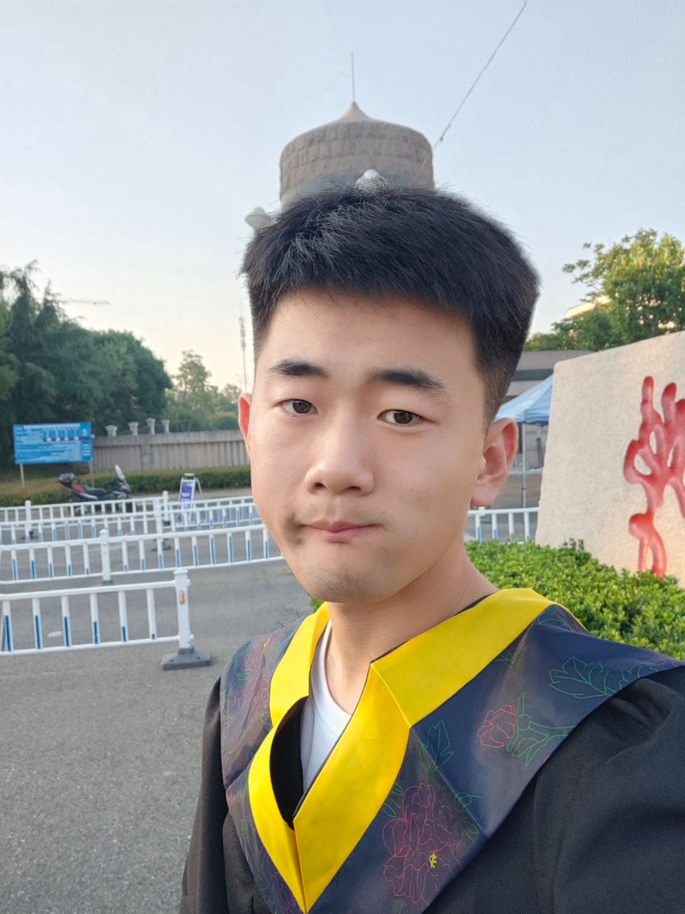

|
Jv Zheng 郑举
I am a Second-year Computer Science Master's student at AI Research Center, Ocean University of china.
I did my B.Sc. in Communication engineering at Ocean University of china.
My research interests are computer vision, machine learning and multimodal generation, specifically, learning-based methods for 3D implicit representation, 3D Gaussian Splatting, 3D AIGC, etc.
If you find any research interests that we might share, feel free to drop me an email. I am always open to potential collaborations.
Github
中文 / English
|

|
I am working at the intersection between Machine learning and Computer Vision,
developing new machine learning methods to resolve the challenging problems in 3D Vision,
especially focus on Reconstruction and Scene Understanding. Recent work in progress is sparse view foreground reconstruction and multi-scale 3d Gaussian Splatting.
My long-term goal is to improve the application of 3D Vision,
benefiting society directly by improving people's living environment.
|
[12/2023] I have been on a research internship at Institute for Al Industry Research (AIR), Tsinghua University.
|
|
Research
Much of my research is about inferring the physical world (shape, motion, color, light, etc) from images and 3D raw data.
Representative papers are highlighted.
|
I led the team to win the second prize of the 19th Graduate Student Mathematical Modeling Contest in China.
I like playing Soccer⚽ and I am a fan of Lionel Messi.
badminton🏸, tennis🎾, frisbee🥏 and etc.
|
|
Last updated on 2023/12/18
|
|
{kind=link}